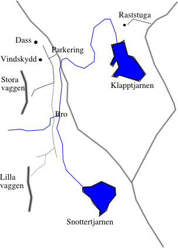

GPS: 63.9162469106397,18.8535690307617
Klassiskt tradberg 9 mil väster om Umeå. Stora väggen är ungefär 60 m hög och har många leder av klass. Ofta en spricka från botten till toppen. Många leder har en brantare första replängd, och en flackare lite enklare andra replängd. Lilla väggen är runt 40 m hög och brantare, de flesta leder är vertikala eller lätt överhängande.
Eftersom de flesta replängder är runt 30 meter så behövs ett större rack än ett vanligt svenskt
tradrack
; placerar du en punkt varannan meter samt två punkter i stand så behöver du 16 säkringar per replängd. För den som är duktig på att hitta kilplaceringar kan många leder göras säkert med ett dubbelt rack kil samt några få kamkilar eller häxor. Idag använder dock de flesta ett standardrack bestående av ett set kil samt ett set små kamsäkringar från fingertoppar till fingrar och ett och ett halvt till två set kamsäkringar från fingrar till handjam med en extra i knytnävsstorlek. En jämförelse mellan olika kamsäkringar i
.
Från kusten på väg 92 via Bjurholm: Efter Balsjö kommer en flygraka. Efter flygrakan och ytterligare en lång raksträcka sväng vänster mot:
Ö Nyland 2 km
. Inne i byn svänger du vänster igen mot Bredträsk. Kör ca 1 km, och ta rakt fram i nästa korsning där en väg svänger av till höger mot Bredträsk. Efter en kort bit svänger du av mot vänster på en liten skogsbilväg. Håll vänster i Y-korsningen efter ett par kilometer. Ungefär 4 km från det att man svänger in på skogsbilvägen ligger Blåberget. När du får syn på berget borde du också kunna se en liten parkering. Vid parkeringen går en tydlig stig som startar med en trapp upp mot klippan. Här finns även en liten bäck med dricksvatten. På väg upp mot klippan passeras en platå med vindskydd, eldstad, utedass och tältplatser. För att hitta till lilla väggen följ skyltningen, korsta bron och följ sedan blå snittsling. Ungefär 100 meter efter bron så dyker en stig upp mot höger, tag av på den och följ den i 40 meter uppåt backen, sväng sedan vänster på en tunn stig. Se även karta nedan
Vägen in från söder är torrare och att föredra under maj månad. Några kilometer efter
Bjurholm
längs väg 92 sväng in mot
Karlsbäck
. Efter man kört över Lögdeälven i byn
Nedre Nyland
(ungf 13 km efter man svängt av från väg 92) så tar man av första höger mot
Abborrtjärn
och kör knappt en kilometer innan man svänger av när första skogsbilsvägen grenar av mot höger. Skogsbilsvägen har en liten skylt som pekar mot
Slottestjärn
. Fortsätt rakt fram där vägen grenar sig mot tjärnen. Håll höger i nästa y-korsning och Blåbergets lilla vägg blir strax synlig.
Finns att köpa på från
eller
.
Kategori:trad Kategori:vertikalt Kategori:sva
Fredrik Nyberg
s bilder från
.
Nya leder, och leder som friats sedan senaste utgåvan av Umeföraren:
För att hitta till lilla väggen följ skyltningen, och korsta bron. Ungefär 100 meter efter bron så dyker en svag stig upp mot höger, tag av på den och följ den i 40 meter, sväng sedan vänster på en ännu tunnare stig. Följ blå snittsling, Se även kartan ovan.
Det finns en hel del vinterleder och aidleder som aldrig blivit ordentligt dokumenterade. Kanske det är dags nu?
Än så länge har inga leder bultats om, utan bultarna bör vara inslagna året för förstabestigning (se Umeföraren) eller åren strax innan. För komplementeringsbultning gäller följande
Nya bultar på
Taknöten
Firningspist över
Ikaros
. Övre ankaret helt nytt. Ankaret på första standplats fick en ny bult, den andra bulten från tidigare datum. Övre firningsankare på firningspisten som startar vid toppen av
Steneld
Samtliga bultar på
Steneld
slås in (tidigare helt naturlig led).
Nya bultar på stand till
Skiljelinjen
A popular two-pitch tradcrag 90 km west of Umeå.
Stora väggen
(the Great Wall) is around 60 m high, and is vertical to slabby.
Lilla väggen
(the Small Wall) is around 35 m high and vertical to slightly overhanging. The section
'Nya leder'
describes the routes that have been put up since the guidebook was printed. The section
'Rekommenderade leder'
describes the best routes on Blåberget.
'Vinterleder och tekniska turer'
describes mixed winter routes and aid routes. There is also quite a lot of waterfall ice on 'Lilla väggen'.
From
Umeå
drive E12 west towards Vännes. After passing Vännesby take road 92 towards Bjurholm/Fredrika. After passing Balsjö there is are two long straightways. A short while after the second one there is a road sign pointing left towards
Ö Nyland
. Follow that road to the tiny village where you go left towards Bredträsk. Continue on that road for 1 km until the first crossing. Take left and continue for some 2-300 meters until you see a tiny logging road on the left. Follow that logging road for 4 km until you see the cliff on the right side. There is ample parking on both sides of the road. From the parking lot you follow a well worn trail up to the cliff.
It is possible to climb at the large wall from mid april, but the last 4 km of the road is not open during the winter. It is possible to drive the last bit after early may, but it can be a rough ride on spring afternoons. The shift from rockclimbing- to mixed conditions generally occurs somewhere around late october or early november.
The routes are quite long with both pitches around 30 m (110 foot), so a large rack is advisable. The minimalist rack should include at least one set of stoppers, with doubles in the midsizes, and a set of camming devices from 0.75 inches to 3.5 inches. (Friend #1 trough #4, or camalot #.5 to #3.5). For the harder routes small camming devices are useful. Bear in mind that most belays are not equipped with bolts. Generally speaking, Blåberget has very solid rock, but beware of rocks on ledges and on the clifftops. Be careful not to knock down any rocks when belaying from the top of the cliff! Down at the parking lot there is little or no reception for cellular phones, but at the main cliff the reception is fine. The letters
a-e
after the difficulty-grade on the route descriptions above refer to the
'gruesomeness grade'
.
Kategori:Västerbotten Kategori:Ångermanland Kategori:Engelska Kategori:Is
Kategori:Klippa
Copyright (C) Permission is granted to copy, distribute and/or modify this document under the terms of the GNU Free Documentation License, Version 1.3